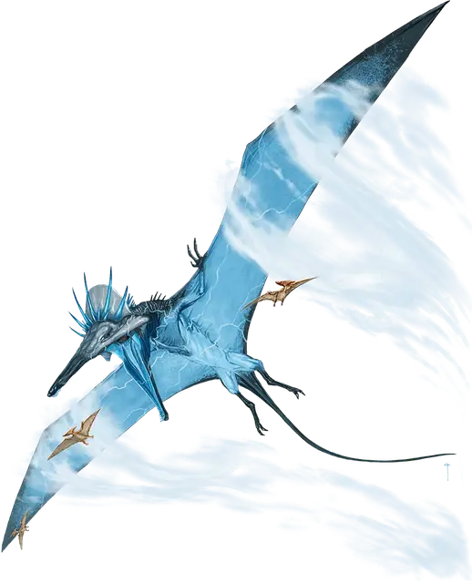

Аэрозавр
Aerosaur
Громадный Монстр (Динозавр), без мировоззрения

Класс Доспеха 14 (природный доспех)
Хиты 155 (10к20 + 50)
Скорость 20 футов, летая 120 футов
| мод | спас | ||
|---|---|---|---|
| СИЛ | 26 | +8 | +8 |
| ЛОВ | 10 | +0 | +0 |
| ТЕЛ | 21 | +5 | +5 |
| мод | спас | ||
|---|---|---|---|
| ИНТ | 3 | −4 | −4 |
| МДР | 10 | +0 | +0 |
| ХАР | 5 | −3 | −3 |
Навыки Восприятие +4
Чувства пассивное Восприятие 14
Опасность 10 (5900 опыта)
Бонус мастерства +4
Особенности
Сопротивление магии. Аэрозавр совершает с преимуществом спасброски от заклинаний и прочих магических эффектов.
Действия
Мультиатака. Аэрозавр совершает одну атаку Укусом и одну атаку Когтями.
Укус. . Рукопашная атака оружием: +12 к попаданию, досягаемость 10 футов, одна цель. Попадание: 27 (3к12 + 8) колющего урона. Если целью является существо Огромного размера или меньше, оно становится схваченным (Сл высвобождения 18). Пока цель схвачена, она так же опутана, и аэрозавр не может Укусить другую цель.
Когти. . Рукопашная атака оружием: +12 к попаданию, досягаемость 10 футов, одна цель. Попадание: 24 (3к10 + 8) рубящего урона.
Шквал от крыльев (перезарядка 5-6). Аэрозавр хлопает крыльями, создавая взрывы оглушительной силы. Каждое существо в переделах 10 футов от аэрозавра должно совершить спасбросок Силы Сл 20. В случае провала существо получает 38 (7к10) урона звуком, отбрасывается на расстояние до 30 футов по горизонтали от аэрозавра и падает ничком. В случае успеха существо получает половину этого урона и отбрасывается от аэрозавра на расстояние до 15 футов по горизонтали.
Описание
Когда дети Аннама впервые начали заселять миры Материального плана, Всеотец создал гигантских динозавров, чтобы они жили бок о бок с ними в качестве компаньонов. Первобытная магия, использованная для создания динозавров, все еще пронизывает их существо и проявляется в красочных линиях, похожих на шрамы, на их огромных телах. Некоторые из этих древних динозавров сохранились в вечных джунглях, скрытых анклавах и других землях, нетронутых остальным миром.
Аэрозавр
Птерозавр размером с самых древних драконов, аэрозавр может похвастаться размахом крыльев почти в 200 футов. Элементальная энергия прочерчивает узоры, подобные молниям, на его чешуе, придавая дополнительную громоподобную мощь взмахам его огромных крыльев.